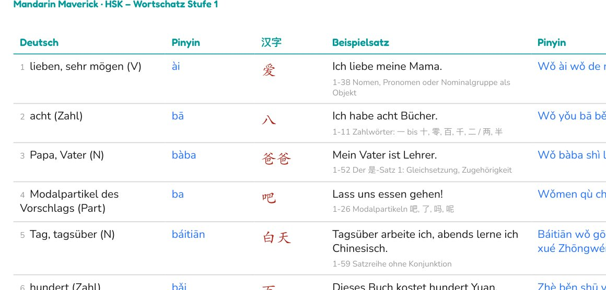
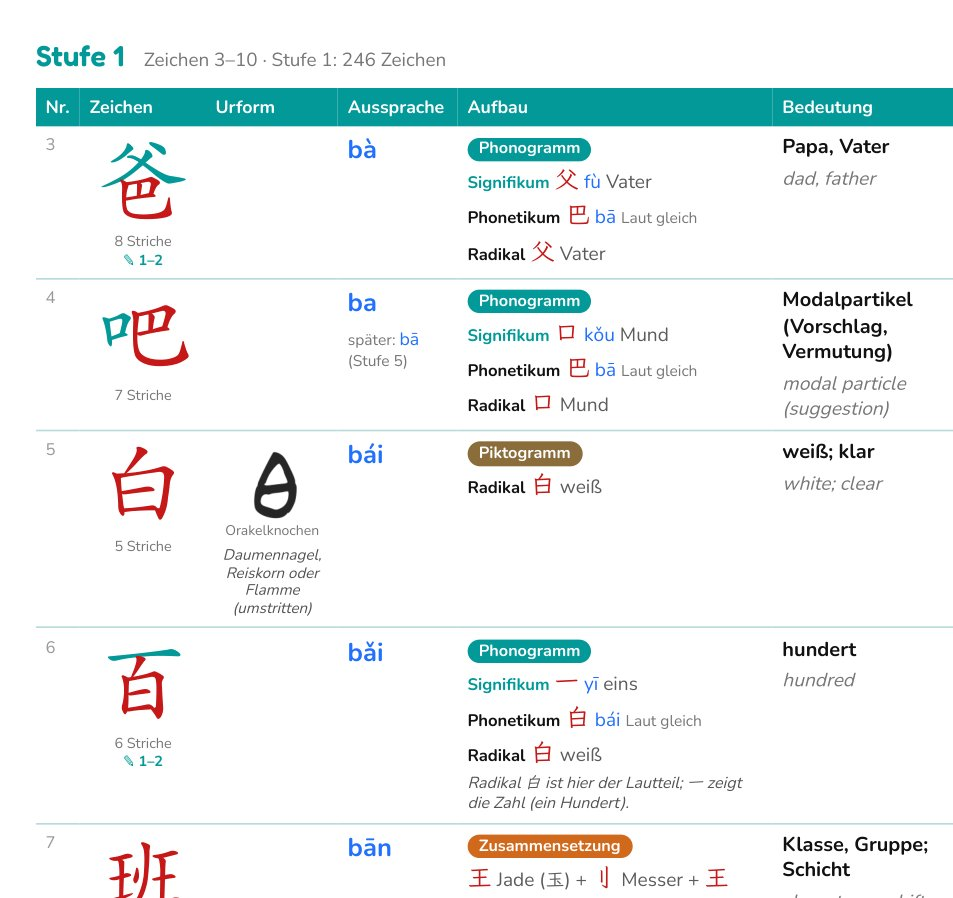
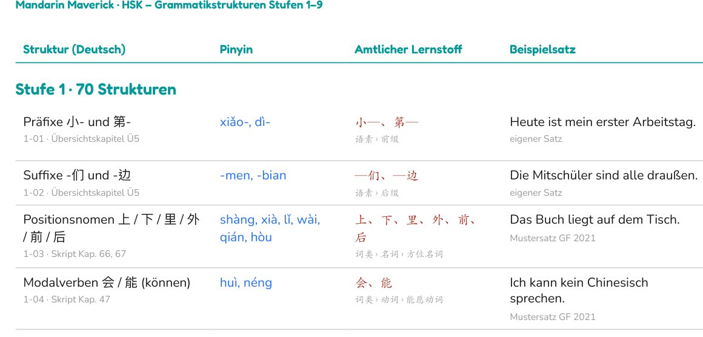
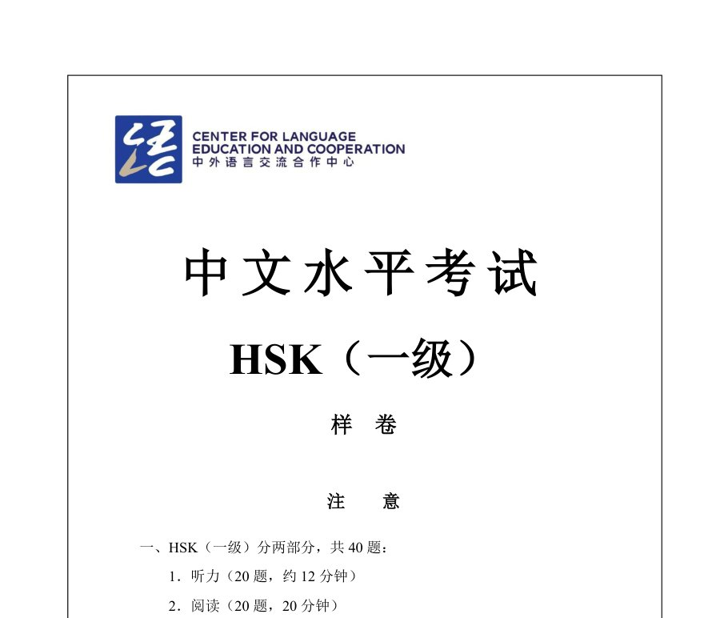

HSK 3.0 – Material
Zum Vortrag „Einführung in die chinesische Zeichenlehre“ · nach dem HSK-Prüfungsplan 2025 (中文水平考试 HSK 考试大纲), gültig für die neue Prüfung ab Dezember 2026

Wortlisten
Alle Wörter je Stufe mit Pinyin, Hanzi, deutscher Bedeutung und Beispielsatz (Stufen 7–9 ohne Beispielsätze). Stufe 1: 300 Wörter, insgesamt 11.000.

Zeichenlisten
Alle 3.088 Lesezeichen mit Pinyin, Bauart (Signifikum und Phonetikum farbig), Radikal, Strichzahl, Bedeutung und Beispielwort — genau das Bauprinzip aus dem Vortrag.

Grammatikliste
Alle 593 Grammatikstrukturen der Stufen 1–9 mit deutscher Erklärung, Pinyin und Beispielsatz; dazu das durchsuchbare Grammatik-Nachschlagewerk.

HSK-Prüfungen
Offizielle Musterprüfungen (样卷) für alle Stufen mit Lösungen und Hörtexten — herausgegeben von Chinese Testing International (CTI). Je Stufe gibt es einen offiziellen Satz.
- chinesetest.cnOffizielle Seite: HSK → Stufe → 样卷
- HSK 7–9Musterprüfung (PDF, CTI)
- ComputerprüfungOffizielle Demo der Oberfläche
- Spiegel der MusterAlle Stufen als Download
Achtung: Material mit „HSK 1–6 真题“ ohne den Zusatz „HSK 3.0“ oder „新版“ gehört meist zur alten Prüfung HSK 2.0 (andere Wortlisten, andere Aufgaben).